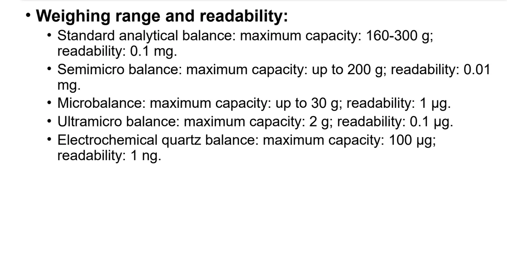
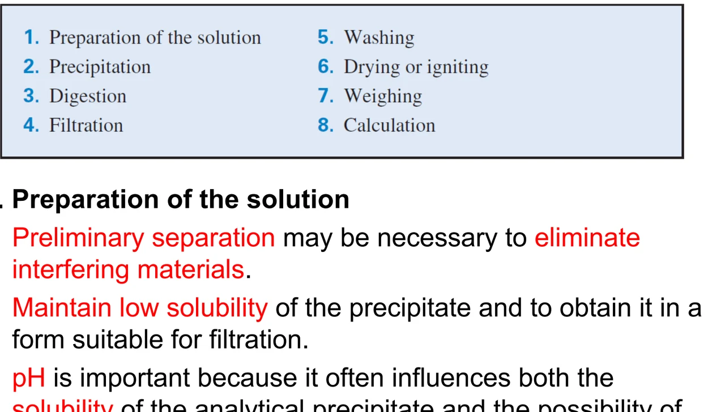
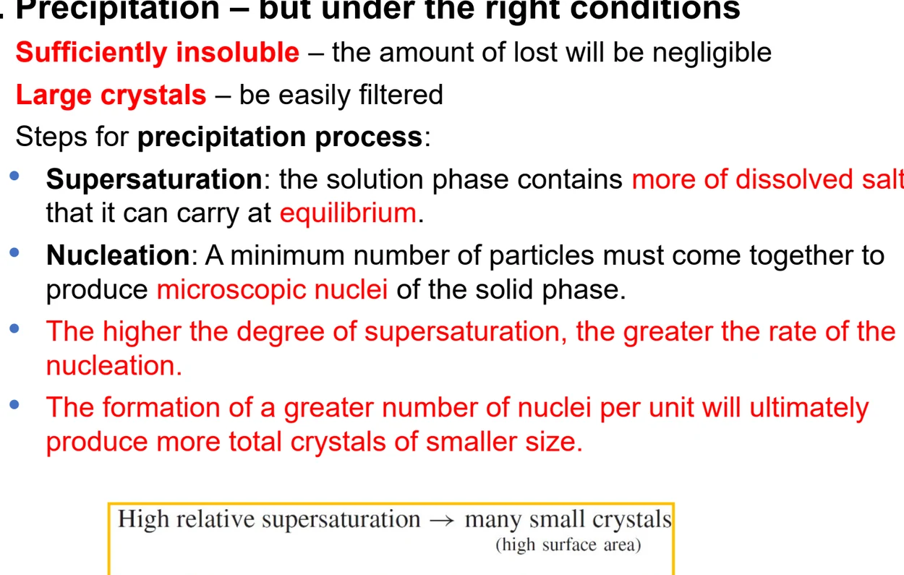
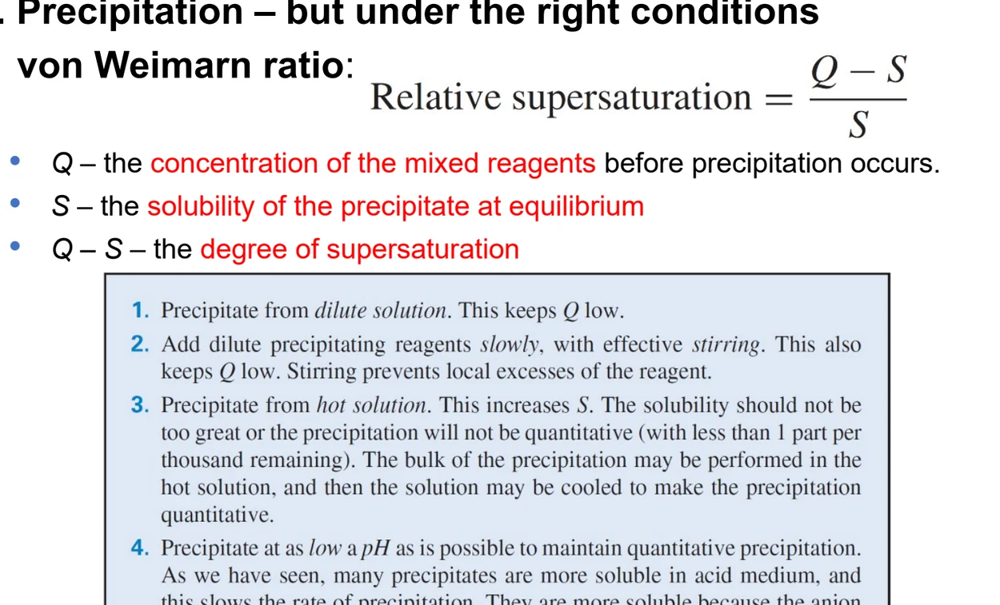
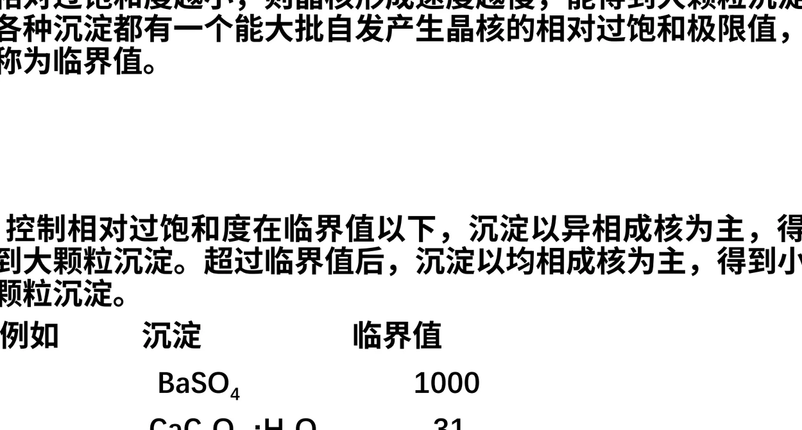
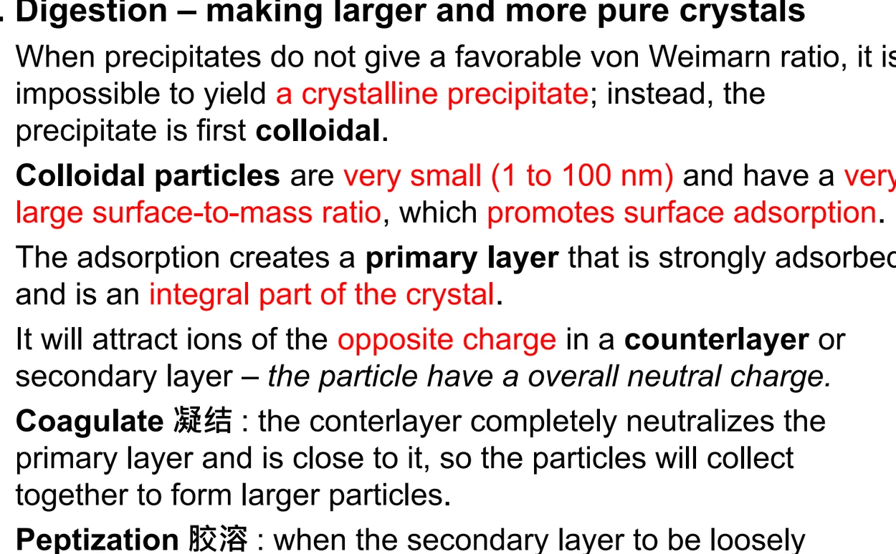
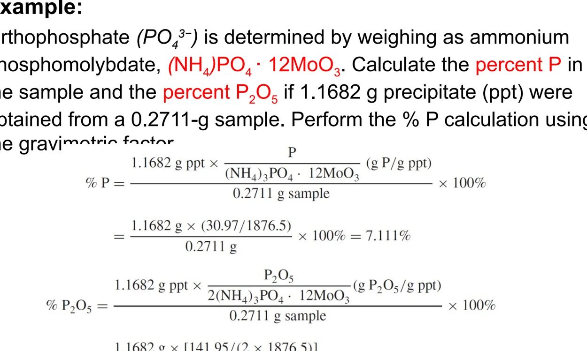
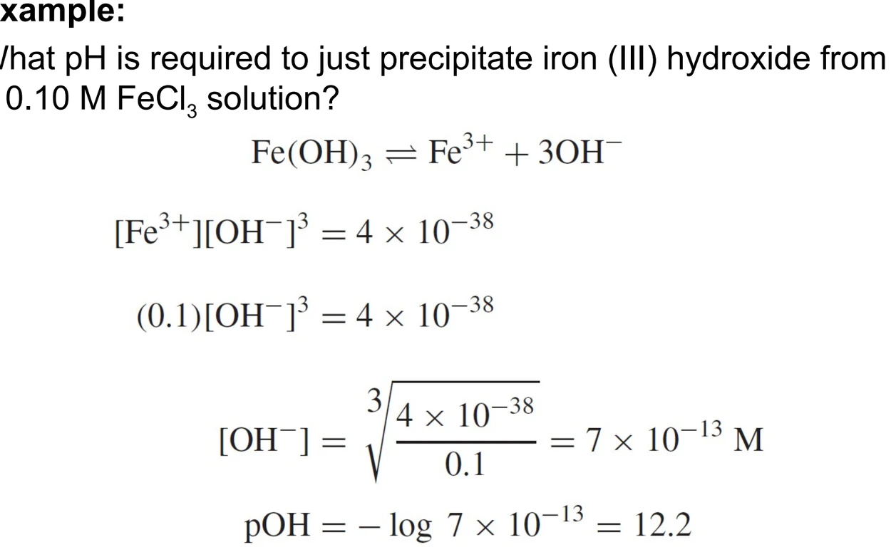
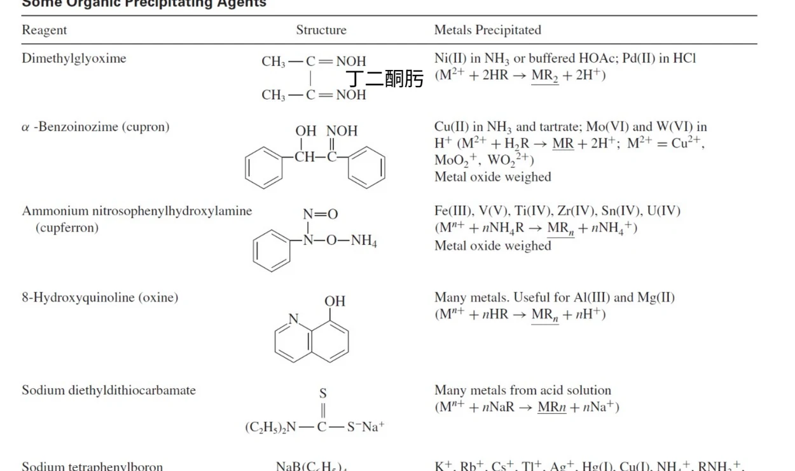
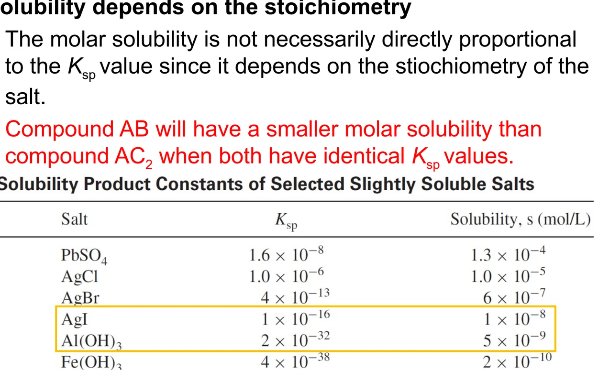

06 · GRAVIMETRIC ANALYSIS
重量分析
把待测组分变成一种纯净、可过滤、可称量的沉淀：八个操作步骤背后的理由、共沉淀的四类机制、换算因数的算法，以及支撑这一切的溶度积与同离子效应。
本章原先完全依据教材 Ch.10 撰写，现按教师课件 Gravimetric analysis 逐页核对，正文的节次与十个主题保持不变，只在既有节内补入课件独有、教材没有展开的部分：分析天平的选型与读数精度（slide 3）、成核机制与相对过饱和度的临界值（slides 5、8）、有机沉淀剂一览表（slide 20）以及两道课件例题（slides 17、26）。凡补充内容都在节尾的来源注中标出课件页码。
6.1 GENERAL STEPS
重量分析的流程与两个关键名词
重量分析（gravimetric analysis）是定量分析中最古老、也最不依赖仪器的一类方法。 它的思路只有一句话：把待测组分定量地转成一种组成固定的固体，然后称它的质量。 因为称的是质量而不是信号强度，所以它不需要标准曲线，也不需要响应因子—— 这是它最大的优点，也是它最大的负担：全部准确度都押在天平与操作上。
把这句话说透：重量分析的样品处理可以很复杂，仪器清单却可以短到只有一件——分析天平（analytical balance）是唯一必备的仪器。 换句话说，方法的全部准确度与精密度，最终都落在一台天平的读数能力和操作者的手上。

重量法的历史地位正是由天平精度直接决定的。历史上最著名的一次重量法工作是 Theodore W. Richards 在哈佛大学完成的： 他用高度精密、高度准确的重量分析流程测定了 25 种元素的原子量，结果达到六位有效数字， 并因此成为第一位获得诺贝尔奖的美国人。这条历史线索说明了一件事：重量分析的准确度上限，历史上就是天平的准确度上限。
先分清两个几乎每份考卷都会问的名词。它们描述的是同一条转化链上的两个不同阶段：
| 名词 | 英文 | 指的是什么 | 对它提什么要求 |
|---|---|---|---|
| 沉淀形式 | precipitation form | 加入沉淀剂后实际析出、被过滤和洗涤的那种固体，常常是水合物或中间产物 | 溶解度要足够小；要纯净；要容易过滤和洗涤；要能定量地转成称量形式 |
| 称量形式 | weighing form | 经过过滤、洗涤、（烘干或灼烧）之后真正放到天平上去称的那种物质 | 组成必须严格固定；化学性质必须稳定（不吸水、不吸收 CO₂、不挥发）；摩尔质量越大越好 |
若沉淀形式本身就已经满足称量形式的三条要求，则两者是同一物质，只需烘干即可——AgCl、BaSO₄、Al(C₉H₆NO)₃、Ni(C₄H₇N₂O)₂ 都属于这一类。
把这两个名词连起来，整章的技术路线就清楚了。教材把它拆成八个步骤：
| 步骤 | 操作 | 为什么必须这样做 |
|---|---|---|
| 1 | 称取试样并溶解 | 取样量要使得最后得到的沉淀质量足够大（一般不小于 0.1 g），否则称量相对误差过大 |
| 2 | 加入合适的沉淀剂 | 沉淀剂要有选择性，且最好是挥发性物质，这样过量的部分能在灼烧时除去 |
| 3 | 控制沉淀条件 | 通过浓度、温度、加料速度、pH 把相对过饱和度压下来，从而得到粗大的晶形沉淀 |
| 4 | 陈化（digestion） | 让小晶体溶解、大晶体长大，同时把吸附的杂质释放回溶液——只对晶形沉淀有效 |
| 5 | 过滤 | 把沉淀从母液中分离出来。此时母液中的可溶性杂质若残留在沉淀上，就会造成正误差 |
| 6 | 洗涤 | 用合适的洗液把沉淀表面吸附的杂质洗掉。洗涤是本章唯一可以事后补救的一步 |
| 7 | 烘干或灼烧 | 把沉淀转成组成固定的称量形式，同时除去水分和挥发性杂质 |
| 8 | 冷却、称量、计算 | 干燥器中冷却至室温后称量，重复至恒重，再按换算因数算出待测组分含量 |
来源：教材 §10.1 重量分析的一般步骤；课件 6 slide 4 给出的步骤编号与之一一对应。

重量法看起来是最老实的定量方法——不依赖标准曲线、不依赖仪器响应因子。但它的可靠性完全押在操作上：沉淀是否纯净、是否过滤得干净、是否有损失。教材把大半篇幅花在第 1–5 步上，讲的其实都是同一件事——怎么把沉淀做对。
来源：教材 §10.1；课件 6 slides 2-4。第 8 步用到的换算因数见 §10.6。
6.2 PRECIPITATION CONDITIONS
相对过饱和度与冯·韦曼比
沉淀能不能长得粗大、好不好过滤，取决于析出瞬间的相对过饱和度。 冯·韦曼（von Weimarn）给出的经验关系是：
这条式子解释了重量分析里几乎所有看似繁琐的操作规定。把 (Q − S)/S 压小只有两条路： 把 Q 压小，或者把 S 抬高。
在背操作规定之前，先把式子里的三个物理量弄清楚。课件把 Q、S 的定义直接写进公式，又把沉淀的析出拆成先后两步：
| 符号／名词 | 英文 | 指什么 |
|---|---|---|
| Q | concentration of the mixed reagents | 沉淀发生之前，两种试剂混合后待测组分与沉淀剂的分析浓度——即「如果全溶，它应该是多少」 |
| S | solubility of the precipitate at equilibrium | 该沉淀在平衡时的溶解度 |
| Q − S | degree of supersaturation | 过饱和度，是引起沉淀作用的推动力 |
| (Q − S) / S | relative supersaturation | 相对过饱和度，决定晶核形成速度 v = K(Q − S)/S，K 与沉淀性质、介质和温度有关 |
只有相对过饱和度才有可比性：Q − S 相同的两个体系，S 大的那个相对过饱和度反而小，颗粒反而粗。
第一步是过饱和，第二步是成核
沉淀的生成不是「一加沉淀剂就立刻出固体」，中间隔着两步：
过饱和（supersaturation）：溶液相中所含的溶解盐超过了它在平衡时所能容纳的量。 此时体系在热力学上不稳定，但还没有固相出现——这一步是沉淀的前提，没有过饱和就没有沉淀的推动力。
成核（nucleation）：必须有最少量的粒子聚集到一起，才能产生固相的微观晶核。 晶核一旦形成，后续的溶质既可以继续成核，也可以沉积到已有晶核上长大——两者是竞争关系。
由此得到本章最核心的一条因果链：过饱和度越高 → 成核速率越大 → 单位体积内的晶核数目越多 → 最终晶体总数多而粒径小；反之，过饱和度低时成核少，物质主要沉积在少数晶核上，得到少而大的晶体。这就是重量分析里所有沉淀条件规定的物理来源。


| 操作规定 | 它在压 (Q − S)/S 的哪一项 | 机理 |
|---|---|---|
| 沉淀剂要缓慢滴加并不断搅拌 | 压低局部 Q | 避免某一瞬间局部浓度过高；搅拌让加入的沉淀剂立刻分散，不形成高过饱和区 |
| 在热溶液中进行 | 抬高 S | 升温增大溶解度，S 变大则比值变小；同时升温还能加快离子扩散，利于晶体长大 |
| 用稀溶液 | 同时压低 Q、抬高相对 S | 降低总浓度使 Q 小；稀溶液也让杂质的挟带量减少 |
| 沉淀剂不过量太多 | 避免副作用 | 过量 50%–100% 已足够；过量太多会引起盐效应或络合效应，反而增大溶解度并带入杂质 |
| 必要时改用均相沉淀 | 从根本上压低 Q | 让沉淀剂在溶液中缓慢、均匀地产生，全程没有局部过浓——见下一节 |
结论：沉淀操作的全部技巧，都是在把 (Q − S)/S 压小。
临界值：每种沉淀都有一条线
操作规定为什么能生效，还要靠一个定量边界来解释。各种沉淀都有一个能大批自发产生晶核的相对过饱和极限值，称为临界值（critical value）：
| 沉淀 | 临界相对过饱和度 | 实践含义 |
|---|---|---|
| BaSO₄ | 1000 | 临界值很大，容许相当高的过饱和度，所以稀溶液、热溶液、缓慢加料这类规定正好把它压在临界值以下，容易得到粗大晶形沉淀 |
| CaC₂O₄·H₂O | 31 | 余量中等，仍以异相成核为主，是最经典的晶形沉淀体系 |
| AgCl | 5.5 | 临界值最小，稍有过饱和就越过临界值，成核极快、颗粒必然细，沉淀条件必须控制得更严 |
读这张表的关键就在比较：临界值越小（如 AgCl 只有 5.5），越容易越过临界值而得到细颗粒，所以沉淀条件必须控制得更严；反过来，BaSO₄ 的 1000 给了很大的操作余地。

均相沉淀：把 Q 压到极限
常规加料方式无论多慢，滴入点附近总是局部过浓。均相沉淀（homogeneous precipitation） 换了个思路：不直接加沉淀剂，而是加入一种能在溶液中缓慢生成沉淀剂的试剂。 这样沉淀剂一产生就被消耗掉，全溶液任何时刻的过饱和度都极低，得到的晶体特别粗大、特别纯净。
| 目标沉淀 | 加入的试剂 | 缓慢生成的沉淀剂 |
|---|---|---|
| BaSO₄ | 硫代乙酰胺（thioacetamide）或二甲基硫酸酯 | 水解缓慢释放 SO₄²⁻ |
| CaC₂O₄ | 草酸二乙酯，或尿素 + 草酸 | 酯水解 / 尿素水解释放的 C₂O₄²⁻ 与 OH⁻ |
| Fe(OH)₃、Al(OH)₃、MgNH₄PO₄ | 尿素 | 尿素水解释放 NH₃，逐渐升高 pH |
来源：教材 §10.1 均相沉淀部分；课件 6 slide 8 把它的机理讲得更直接——让沉淀剂缓慢生成，其目的正是把 Q 长期压在临界值以下，使沉淀全程以异相成核为主。均相沉淀还有一个附带好处：沉淀剂不引入外来离子，沉淀更纯净。
教材特别点出：最难溶的沉淀并不是重量分析最好的选择。因为溶解度太小意味着 S 本来就很低，即使 Q 控制得很好，相对过饱和度依然很高，成核太快，颗粒必然细。典型反例是水合氧化铁 Fe(OH)₃·xH₂O——它形成表面积巨大的胶状沉淀，既难过滤又极易吸附杂质。所以溶度积越小越好这个直觉在重量法里是不成立的。
来源：教材 §10.1 沉淀条件与冯·韦曼比部分；课件 6 slides 5-8。
6.3 DIGESTION & COLLOIDS
陈化、胶体与胶溶
沉淀刚析出时，颗粒大小是参差不齐的：小颗粒溶解度比大颗粒略大（表面能效应）， 于是如果把沉淀和母液一起放置，小晶体会慢慢溶解，而大晶体继续长大。 这个过程叫陈化（digestion 或 aging）。
| 陈化带来的两个好处 | 机理 |
|---|---|
| 颗粒变粗、易于过滤和洗涤 | 小晶体溶解、大晶体长大，平均粒径上升，总表面积下降 |
| 纯度提高 | 表面吸附的杂质随着小晶体溶解被重新释放回溶液 |
来源：教材 §10.1。这两个好处其实是同一件事的两面——总表面积下降，吸附位点就少，可挟带的杂质自然就少。
陈化对晶形沉淀是必需的。但对胶状/无定形沉淀（如水合氧化铁）恰恰相反：陈化会让它脱水硬化、更加难以洗涤，所以这类沉淀应当趁热过滤、不要陈化。这一条在第 10.5 节洗涤时还会再出现。
胶体的两个方向
颗粒直径落在 1–100 nm 就进入胶体范围。此时比表面极大，表面能成为主导， 沉淀的行为和普通晶体完全不同。教材反复用到两个相反的过程：
| 过程 | 方向 | 怎么发生 | 对分析的影响 |
|---|---|---|---|
| 凝聚（coagulation） | 溶胶 → 沉淀 | 加入电解质压缩双电层，或加热破坏水化层 | 这是我们想要的方向：让胶体聚沉成可过滤的沉淀 |
| 胶溶（peptization） | 沉淀 → 溶胶 | 洗涤时电解质被洗掉，胶粒重新带上同种电荷互相排斥而分散 | 这是我们想避免的方向：沉淀会穿过滤纸造成负误差 |
记忆要点：凝聚与胶溶是一对可逆过程，洗涤方式决定往哪边走。
胶溶是洗涤环节最容易犯的错误。对策是不要用纯水洗，而要用含少量电解质的 挥发性洗液（如稀 NH₄NO₃、稀 NH₄Cl），既维持了离子强度防止胶溶， 又能在灼烧时全部挥发而不留残渣。
双电层：胶粒为什么带电，又为什么能聚沉
要理解「胶溶为什么怕洗、凝结为什么怕电解质不够」，必须看清胶粒表面的双电层（electric double layer）结构。课件把它拆成两层：
① 吸附层（primary layer，又称一次吸附层）：胶粒表面选择性地吸附溶液中的构晶离子（lattice ions，即组成该沉淀本身的离子），形成一层强烈吸附的带电层。这一层不是外加的污物，而是晶体本身的组成部分——所以它既洗不掉，也不该洗掉。
② 反离子层（counterlayer / secondary layer，又称扩散层）：带电的吸附层再吸引溶液中带相反电荷的离子，围在它外面，使粒子整体呈电中性。这一层是紧是松，直接决定颗粒往哪个方向走。

一句话结论：洗液不能只用纯水，必须用含少量挥发性电解质的洗液——它的作用不是「冲掉」什么，而是维持离子强度、把反离子层保持在紧密状态，防止胶溶；同时所选的电解质要能在灼烧时完全挥发，不留下新的残渣。
来源：教材 §10.1 陈化、胶体、洗涤与过滤部分；课件 6 slide 11。
6.4 COPRECIPITATION
共沉淀的四类与后沉淀
沉淀不可能绝对纯净。凡是沉淀析出时同时进入沉淀的杂质，统称为共沉淀 （coprecipitation）。教材按机理分成四类，对策完全不同——这是本章最容易出简答题的地方。
| 类型 | 机理 | 能不能洗掉 | 与时间的关系 | 对策 |
|---|---|---|---|---|
| 表面吸附（adsorption） | 沉淀表面带电，吸引溶液中带相反电荷的离子；比表面越大吸附越多 | 能（洗涤可逆） | 平衡过程，与时间无关 | 洗涤；也可通过陈化减小总表面积 |
| 吸留（occlusion） | 沉淀生长太快，把母液机械地包在晶体内部 | 不能（结构性） | 与时间有关 | 放慢沉淀速度；重新沉淀 |
| 包藏（inclusion） | 杂质离子与主沉淀离子半径相近，被直接嵌入晶格 | 不能（结构性） | 与时间有关 | 重新沉淀，且要改变沉淀条件 |
| 同晶置换（isomorphous replacement） | 杂质离子与主离子半径、电荷、极化能力相近，直接替代其位置形成混晶 | 不能（结构性） | 与时间无关 | 几乎无解，只能改用其他沉淀剂或预先分离 |
来源：教材 §10.1 沉淀中的杂质部分。核心区分：吸附是平衡过程且可洗，吸留/包藏/同晶置换是结构性的且不可洗，后沉淀只与时间有关。
按能不能洗掉和跟时间有没有关系两条线记：
能洗掉的只有表面吸附（因为它发生在表面，是平衡过程）。
和时间有关的是后沉淀（放久了才出现，所以对策是尽快过滤）。
既不能洗、又和时间无关的是吸留/包藏和同晶置换（结构性问题，只能重新沉淀，同晶置换甚至无解）。
后沉淀：唯一与时间直接相关的一类
后沉淀（postprecipitation）与共沉淀不同：它在沉淀生成的那一刻并不发生， 而是在沉淀放置的过程中，溶液中本来不该沉淀的组分慢慢沉积到已有沉淀的表面上。
经典例子是草酸钙。若溶液中有 Mg²⁺，草酸镁倾向形成过饱和溶液， 在草酸钙刚析出时并不会跟着沉淀；但如果把沉淀放置过久， 草酸镁就会逐渐沉积在草酸钙表面，使测定结果偏高。对策很简单—— 沉淀后不要久放，尽快过滤。
| 现象 | 是否属于共沉淀 | 关键判据 |
|---|---|---|
| AgCl 沉淀表面吸附 Cl⁻ 与 Ag⁺ | 是（表面吸附） | 沉淀生成瞬间就发生，洗涤可除去 |
| BaSO₄ 中夹带 BaCl₂ | 是（吸留） | 沉淀过快导致，重新沉淀可改善 |
| 草酸钙放置过久后表面出现草酸镁 | 不是（后沉淀） | 沉淀生成后随时间出现，唯一对策是尽快过滤 |
区分共沉淀与后沉淀的唯一标准是发生的时间：与沉淀同时发生的是共沉淀，在沉淀之后慢慢出现的是后沉淀。
来源：教材 §10.1 共沉淀与后沉淀部分。
6.5 FILTRATION & IGNITION
洗涤、灼烧与称量形式
过滤和洗涤是唯一能补救前几步失误的环节。洗液的选择要同时满足三条： 能洗掉杂质、不溶解沉淀、不引入新的干扰。
| 沉淀类型 | 洗液 | 为什么这样选 |
|---|---|---|
| 晶形沉淀（BaSO₄ 等） | 稀 H₂SO₄ 或含少量沉淀剂的水 | 同离子效应降低溶解度，防止洗涤时溶解损失 |
| 胶状沉淀（Fe(OH)₃·xH₂O 等） | 含挥发性电解质的稀溶液（如稀 NH₄NO₃） | 维持离子强度防止胶溶；NH₄NO₃ 灼烧时分解挥发不留残渣 |
| 需避免胶溶的沉淀 | 不用纯水 | 纯水洗去电解质后胶粒重新带同种电荷而分散，会穿过滤纸造成负误差 |
来源：教材 §10.1 洗涤与过滤部分。
从沉淀形式到称量形式
灼烧的目的不只是除去水分，更要把沉淀形式定量地转化成组成固定的称量形式。 这一步的化学计量关系必须明确，否则换算因数就无从谈起。
| 沉淀形式 | 灼烧后得到的称量形式 | 灼烧过程发生了什么 |
|---|---|---|
| CaC₂O₄·H₂O | CaO（900–1000 °C） | 失去结晶水，草酸根分解为 CO 与 CO₂，留下 CaO |
| CaC₂O₄·H₂O | CaCO₃（500–600 °C，低温） | 只失去结晶水并部分分解；温度控制不同，称量形式就不同 |
| MgNH₄PO₄·6H₂O | Mg₂P₂O₇ | 失去结晶水与 NH₃，两分子磷酸盐缩合成一分子焦磷酸盐 |
| Fe(OH)₃·xH₂O | Fe₂O₃ | 失去水，两分子氢氧化铁脱水缩合为一分子氧化铁 |
| Al(C₉H₆NO)₃ | Al(C₉H₆NO)₃（直接烘干） | 有机螯合物本身组成固定，灼烧反而会挥发损失 |
注意：有些沉淀（如 AgCl、BaSO₄、Al(ox)₃、Ni(dmg)₂）本身就是称量形式，只需烘干不必灼烧。
待测组分质量 = 称量形式质量 × 换算因数。换算因数越小，称量误差传递到结果上被压缩得越厉害。而换算因数与称量形式的摩尔质量成反比，所以用摩尔质量大的有机沉淀剂（如 8-羟基喹啉、丁二酮肟）能把误差缩小一个数量级。
来源：教材 §10.1 洗涤与过滤、烘干或灼烧部分。
6.6 CALCULATIONS
换算因数与重量计算
所有计算最后都归结为一个乘数——换算因数（gravimetric factor）， 通常记作 F。它把称量形式的质量换算成待测组分的质量。
教材把重量计算分成三类问题，难度依次上升：
| 类型 | 已知 | 求 | 关键动作 |
|---|---|---|---|
| 直接计算 | 试样质量、称量形式质量、F | 待测组分含量 | 直接用 F 换算，注意单位与有效数字 |
| 求换算因数 | 沉淀形式与称量形式的化学式 | F | 先配平从沉淀到称量的反应，再代入公式 |
| 需自己配平计量比 | 两个不同物质的化学式 | F | 这类题必须先写出配平的反应，确定 a 与 b |
来源：教材 §10.2 重量计算部分。
直接计算：BaSO₄ 法测硫
称取试样 0.5000 g，经处理得到 BaSO₄ 沉淀，灼烧后称得 0.2330 g。求试样中硫的质量分数。
① 求换算因数：F = M(S) / M(BaSO₄) = 32.06 / 233.39 = 0.1374。
② 求硫质量：0.2330 × 0.1374 = 0.03201 g。
③ 求质量分数：0.03201 / 0.5000 = 6.402%。
求换算因数：Bi₂S₃ 法测铋
把 Bi³⁺ 沉淀为 Bi₂S₃，再灼烧成 Bi₂O₃ 称量。求 F。
一个 Bi₂O₃ 分子对应两个 Bi，而两个 Bi 来自一个 Bi₂S₃ 单元，所以 a = 2、b = 1：
F = 2 × M(Bi) / M(Bi₂O₃) = 2 × 208.98 / 465.96 = 0.8970。
磷钼酸铵法测磷：换算因数怎么构造
正磷酸盐（orthophosphate，PO₄³⁻）以磷钼酸铵 (NH₄)₃PO₄·12MoO₃ 的形式称量。 由 0.2711 g 试样得到 1.1682 g 沉淀，求试样中磷的质量分数与 P₂O₅ 的质量分数。
先把换算因数写出来。F 的构造规则是：分子放待测组分的式量乘系数 a，分母放称量形式的式量乘系数 b， 即 F = a × M(待测组分) / (b × M(称量形式))，其中 a、b 由配平的计量关系确定。① 求 %P： 一个 (NH₄)₃PO₄·12MoO₃ 单元里只有 一个 P，所以 a = b = 1， F = M(P) / M((NH₄)₃PO₄·12MoO₃) = 30.97 / 1876.5 = 0.016 51。
② %P = (1.1682 × 0.016 51) / 0.2711 × 100% = 7.111%。
③ 求 %P₂O₅ 时换一个待测组分。由 2P ~ P₂O₅ 的关系，a = 1、b = 2——即每两个磷钼酸铵单元才对应一个 P₂O₅： F′ = M(P₂O₅) / (2 × M((NH₄)₃PO₄·12MoO₃)) = 141.95 / (2 × 1876.5) = 0.037 83。
④ %P₂O₅ = (1.1682 × 0.037 83) / 0.2711 × 100% = 16.30%。
校验一下答案的合理性：P₂O₅ 中磷的质量分数是 2 × 30.97 / 141.95 = 43.6%，而 7.111% ÷ 0.436 = 16.3%，两种算法一致—— 这也是检查系数 a、b 有没有写反的最快办法。

Fe(OH)₃ 刚开始沉淀需要多高的 pH
在 0.10 mol·L⁻¹ FeCl₃ 溶液中，Fe(OH)₃ 刚开始沉淀所需的 pH 是多少？已知 Ksp(Fe(OH)₃) = 4 × 10⁻³⁸。
① 写出溶解平衡：Fe(OH)₃ ⇌ Fe³⁺ + 3OH⁻，因此 Ksp = [Fe³⁺][OH⁻]³ = 4 × 10⁻³⁸。
② 代入 [Fe³⁺] = 0.10 mol·L⁻¹：0.10 × [OH⁻]³ = 4 × 10⁻³⁸。
③ 解出 [OH⁻] = (4 × 10⁻³⁸ / 0.10)^(1/3) = 7 × 10⁻¹³ mol·L⁻¹。
④ 取负对数：pOH = −log (7 × 10⁻¹³) = 12.2，所以 pH = 14.0 − 12.2 = 1.8。
结论出人意料却在情理之中：只要 pH 超过 1.8，Fe³⁺ 就会开始以 Fe(OH)₃ 沉淀析出。

① a 与 b 不能凭化学式直接读——必须从沉淀形式到称量形式的配平反应里数。例如上例中 Bi₂S₃ 灼烧成 Bi₂O₃ 时，硫以 SO₂ 形式失去，铋的个数比保持不变，这一点要靠配平确认。
② F 只与化学式和配比有关，与取样量无关，所以同一物质的 F 是一个常数，应当记在笔记上反复使用。
来源：教材 §10.2、§10.6 重量计算与例题；课件 6 slides 15-17、slide 26。
6.7 ORGANIC REAGENTS
有机沉淀剂
有机沉淀剂在重量分析里地位特殊，因为它们往往能同时解决三个问题： 选择性高、沉淀呈晶形、摩尔质量大因而换算因数小。 教材列出的常用试剂集中在螯合剂和缔合剂两大类。
有机沉淀剂的两大优势与一条选择性规律
课件把有机沉淀剂的优点归纳成两条，这两条正好对应重量分析最看重的两件事：
| 优势 | 英文表述 | 为什么对重量分析特别重要 |
|---|---|---|
| 生成的沉淀水溶性极低 | very low solubility in water | 溶解损失可忽略，沉淀能定量回收；同时低溶解度意味着沉淀本体致密、易于过滤洗涤 |
| 换算因数有利 | favorable gravimetric factor | 试剂的摩尔质量大，而被测组分在称量形式中所占的比例很小，换算因数随之变小——称量误差在乘以 F 时被摊薄，结果的相对误差显著下降 |
从结构上看，它们大多是螯合剂（chelating agents），与金属离子形成难溶的、不带电荷的螯合物（uncharged chelates）。 「不带电」这一点很关键：不带电的分子不被水化，不会像带电胶粒那样形成稳定的水化层，因此沉淀容易聚结、容易过滤， 这一点与 §6.3 讲的胶体双电层问题正好互为对照。
又因为螯合剂本身是弱酸，必须先解离出配位基团才能与金属配位，所以能被沉淀的元素种类——也就是方法的选择性——通常由 pH 调节。 课件给出的规律很直接：金属螯合物越弱（稳定常数越小），所需的沉淀 pH 越高。反过来，螯合物越稳定，就越能在较低 pH 下定量沉淀， 这正是「调 pH 就能选性沉淀某一种离子」的化学基础。
| 试剂 | 针对的离子 | 沉淀形式 | 特点 |
|---|---|---|---|
| 8-羟基喹啉（oxine, Hox） | Al³⁺、Mg²⁺、Zn²⁺、Ca²⁺ 等 | Al(C₉H₆NO)₃ 等螯合物 | 摩尔质量大（F = 0.05853），可在不同 pH 下选择性沉淀不同离子 |
| 丁二酮肟（dimethylglyoxime, H₂dmg） | Ni²⁺、Pd²⁺ | Ni(C₄H₇N₂O)₂ | 在氨性溶液中只沉淀这几种离子，选择性极高；沉淀本身即称量形式 |
| 四苯硼钠（NaB(C₆H₅)₄） | K⁺、NH₄⁺、Rb⁺、Cs⁺ | KB(C₆H₅)₄ 等 | 以大离子沉淀大离子，F 极小 |
| 铜铁试剂（cupferron，N-亚硝基苯胲铵） | Cu²⁺、Fe³⁺、Ti(IV)、Zr(IV)、V(V) 等在强酸性溶液中 | 相应的螯合物，需灼烧成金属氧化物称量 | 可在强酸中沉淀，因而能把上述离子与 Al³⁺、Cr³⁺、Ni²⁺ 等分开；沉淀需灼烧成氧化物称量 |
| 四苯砷氯化物 | ClO₄⁻、ReO₄⁻ 等大阴离子 | 相应的缔合物 | 与四苯硼钠方向相反，针对大阴离子 |
来源：教材 Table 10.1、Table 10.2；课件 6 slide 20 的试剂表。ox = 8-羟基喹啉单阴离子；dmg = 丁二酮肟单阴离子。

无机沉淀剂靠溶解度差异工作，而很多离子的硫化物、氢氧化物溶解度差别不够大。有机螯合剂靠螯合环尺寸与离子半径、电荷的匹配工作：只有当离子的半径、电荷和配位构型与螯合环的尺寸相容时才能形成稳定的螯合物，所以选择性来自结构而不是溶解度；再叠加上弱酸解离所需的 pH，选择性就有了两级调节。
有些螯合物组成不严格符合化学计量，或含有不定量的溶剂分子，这时不能直接烘干称量，必须灼烧成金属氧化物才能得到准确结果。反过来，Al(C₉H₆NO)₃ 这类组成稳定、摩尔质量又大的螯合物，正是重量分析最理想的称量形式。
来源：教材 §10.3、§10.4，Table 10.1、Table 10.2；课件 6 slides 19-20。
6.8 SOLUBILITY PRODUCT
溶度积与摩尔溶解度
前面都是操作技巧，这里转到支撑一切定量判断的平衡。对难溶电解质 MmXn，教材定义的溶度积是：
固体的活度按定义为 1，所以已经被并入平衡常数。这个关系与是否存在未解离中间体无关——自由离子的浓度严格由 Ksp 定义，我们就用它来度量化合物的溶解度。
从 Ksp 到摩尔溶解度
溶解度 s（mol·L⁻¹）与 Ksp 之间的换算取决于化合物的价型， 因为一个分子解离出的离子数目不同。
先记住课件给出的总结论：摩尔溶解度不能直接由 Ksp 的大小来比较。Ksp 只是平衡常数， 它到摩尔溶解度的换算还要经过价型（化学计量）这一道换算；Ksp 相同时，AB 型（如 AgCl）的摩尔溶解度小于 AC₂ 型（如 Ag₂CrO₄）。 直观理解：AB 型溶 1 mol 只放出 2 mol 离子，AC₂ 型溶 1 mol 放出 3 mol 离子；后者「按单元算」产生的离子更多， 所以在放出同样多离子的前提下，AC₂ 型需要的溶解量更少。于是 Ksp 相同（= 离子浓度的幂积相同）时， 需要溶得更多的反而是 AC₂ 型——AC₂ 型的摩尔溶解度更大。因此「Ksp 小就更难溶」这个直觉在跨价型比较时不成立。

| 价型 | 实例 | 解离关系 | s 与 Ksp 的关系 |
|---|---|---|---|
| 1 : 1 | AgCl、BaSO₄ | MX ⇌ M⁺ + X⁻ | s = √Ksp |
| 1 : 2 或 2 : 1 | Ag₂CrO₄、CaF₂ | MX₂ ⇌ M²⁺ + 2X⁻ | s = ∛(Ksp / 4) |
| 1 : 3 或 3 : 1 | Al(OH)₃、Ag₃PO₄ | MX₃ ⇌ M³⁺ + 3X⁻ | s = ∜(Ksp / 27) |
| 2 : 3 | Bi₂S₃ | M₂X₃ ⇌ 2M³⁺ + 3X²⁻ | s = ⁵√(Ksp / 108) |
同价型才能直接比较 Ksp 的大小。价型不同时，必须都换算成摩尔溶解度 s 才能比。
饱和溶液中溶质的浓度与容器大小无关（游泳池里能溶的固体当然更多，但浓度一样），也与未溶解固体的多少无关——只要还有固体存在。此外，因为是多相平衡，达到平衡比均相溶液平衡慢得多。
教材 Table 10.3 给出两个极端。AgI 的 Ksp 比 Al(OH)₃ 大 5 × 10¹⁵ 倍，但摩尔溶解度只有它的两倍——又是价型在起作用。另一头，HgS 的 Ksp = 4 × 10⁻⁵³，摩尔溶解度只有 6 × 10⁻²⁷ mol·L⁻¹——这意味着即使把溶液稀释到极其稀薄，汞离子也几乎完全沉淀，这就是硫化物分离法能做得那么彻底的原因。
来源：教材 §10.5，Table 10.3，Example 10.6–10.12；课件 6 slide 25。
6.9 COMMON ION EFFECT
同离子效应
如果溶液里已经有和沉淀同种的离子，平衡会向左移动，溶解度下降。 这就是同离子效应（common ion effect），也是重量分析必须加过量沉淀剂的理论依据。
| 情形 | 加入的离子 | 定性结论 | 定量效果 |
|---|---|---|---|
| 沉淀剂过量一倍 | 同种离子 | 溶解度下降 | 残余浓度按 1/(过量倍数) 关系下降，一般过量 50%–100% 已使损失可忽略 |
| 过量很多 | 同种离子 | 可能出现反向效应 | 盐效应使活度系数下降，或络合效应形成可溶络离子，溶解度反而回升 |
来源：教材 §10.5 降低溶解度——同离子效应部分。
同离子效应的定量估算
已知 BaSO₄ 的 Ksp = 1.1 × 10⁻¹⁰。求在 0.010 mol·L⁻¹ Na₂SO₄ 溶液中的溶解度。
设溶解度为 s，则 [Ba²⁺] = s、[SO₄²⁻] = 0.010 + s ≈ 0.010。
s × 0.010 = 1.1 × 10⁻¹⁰，得 s = 1.1 × 10⁻⁸ mol·L⁻¹。
与纯水中的 s = √Ksp = 1.05 × 10⁻⁵ 相比，溶解度下降了约 1000 倍——这正是重量分析中必须用稀 H₂SO₄ 而不是纯水作洗液的原因。
纯水作洗液时，BaSO₄ 的溶解损失按 s = 1.05 × 10⁻⁵ mol·L⁻¹ 计算，每 100 mL 洗液会损失约 0.24 mg BaSO₄——对 0.2 g 的沉淀来说是 0.1% 的负误差。改用稀 H₂SO₄ 后损失可忽略。这是洗液必须含沉淀剂离子的定量理由。
来源：教材 §10.5 同离子效应，Example 10.7，Figure 10.3。
6.10 DIVERSE ION EFFECT
条件溶度积与盐效应
Ksp 是热力学量，用的是活度。当我们用浓度代替活度时，实际上是在定义一个 随离子强度变化的条件溶度积：
① Ksp 的数值在所有离子强度下都成立（它是热力学量）；② cKsp 只在零离子强度下等于 Ksp，在其他离子强度下必须按上式重新计算。
上式还给出定性的结论：离子活度下降 → cKsp 增大 → 摩尔溶解度增大。这正是异离子效应的数学表达。
这种因加入不参与沉淀的强电解质而导致溶解度增大的现象叫异离子效应 （diverse ion effect），也叫盐效应。它和同离子效应是一对反向作用， 在沉淀剂过量很多时会显现出来。
| 现象 | 原因 | 对沉淀的影响 | 实验中怎么处理 |
|---|---|---|---|
| 同离子效应 | 同种离子使平衡左移 | 溶解度下降 | 加适量过量沉淀剂（50%–100%） |
| 盐效应（异离子效应） | 离子强度上升使活度系数下降 | 溶解度上升 | 沉淀剂不要过量太多；必要时用活度而非浓度计算 |
| 络合效应 | 过量沉淀剂与沉淀离子形成可溶络离子 | 溶解度上升 | 控制沉淀剂用量；经典例子是过量 Cl⁻ 使 AgCl 生成 [AgCl₂]⁻ 而溶解 |
| 酸效应 | 弱酸根型沉淀在强酸性下质子化 | 溶解度上升 | 控制 pH。这也是第 6 章条件溶度积的主题 |
来源：教材 §10.6。前两项是本章内容，后两项是第 6 章（沉淀滴定与条件溶度积）的主题。
第 10 章只需要你记住方向：酸让弱酸根型沉淀溶解、络合剂让金属型沉淀溶解。第 6 章会给出条件溶度积 K′sp 的定量算法，把 α 系数（酸效应）和络合副反应系数乘进 Ksp 里。本章与第 6 章是定性到定量的接力。
来源：教材 §10.6，Example 10.13，Figure 10.4。